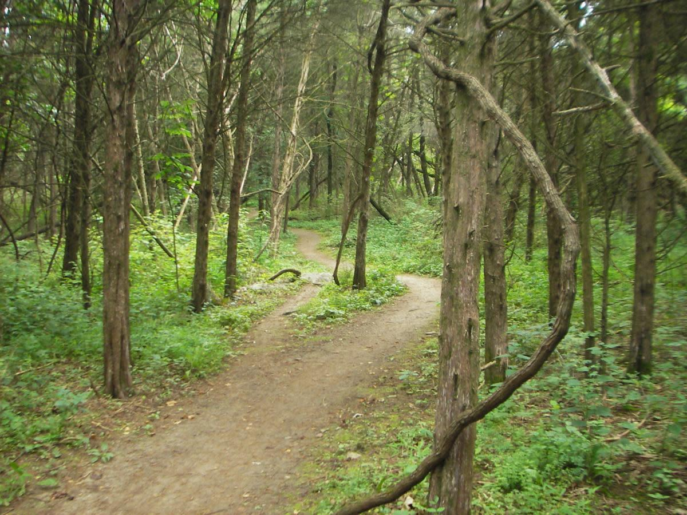

Find Your Next Run
Welcome to Valley Run! This website helps runners discover trails around Harrisonburg and the Shenandoah Valley.
Whether you are a beginner or an experienced runner, there are local places to explore, build endurance, and enjoy the outdoors.
Use our trail directory and route ideas to help plan your next adventure.
Featured Trail: Rocktown Trails

Located at Hillandale Park, Rocktown Trails offers wooded paths for people who enjoy running outdoors.
Visit the official Rocktown Trails website for more information.
Explore Local Trails
Friendly City Trail
A paved trail for runners who prefer a smoother surface and a relaxed outdoor run.
Edith J. Carrier Arboretum
A scenic natural area near James Madison University with woodland paths and natural surroundings.
Lake Shenandoah
An outdoor destination where visitors can enjoy lake views and the surrounding landscape.
Visit our trail directory to learn more about these destinations.
Ready to Run?
Check the weather, bring water, and choose a trail that matches your experience level.
Read our trail safety tips before heading out.
Not sure where to start? Explore our running route ideas.